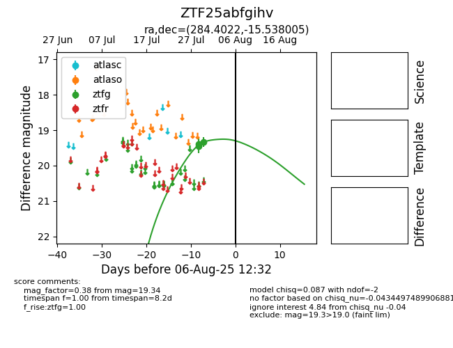

Target ZTF25abfgihv at 2025-08-06 13:49, see:
FINK: fink-portal.org/ZTF25abfgihv
Lasair: lasair-ztf.lsst.ac.uk/objects/ZTF25abfgihv
ALeRCE: alerce.online/object/ZTF25abfgihv
alt names
ZTF25abfgihv (ztf,fink)
coordinates:
equatorial (ra, dec) = (284.4022,-15.53800)
galactic (l, b) = (19.6932,-8.35077)
photometry
last ztfg=19.34
3 ztfg detections
